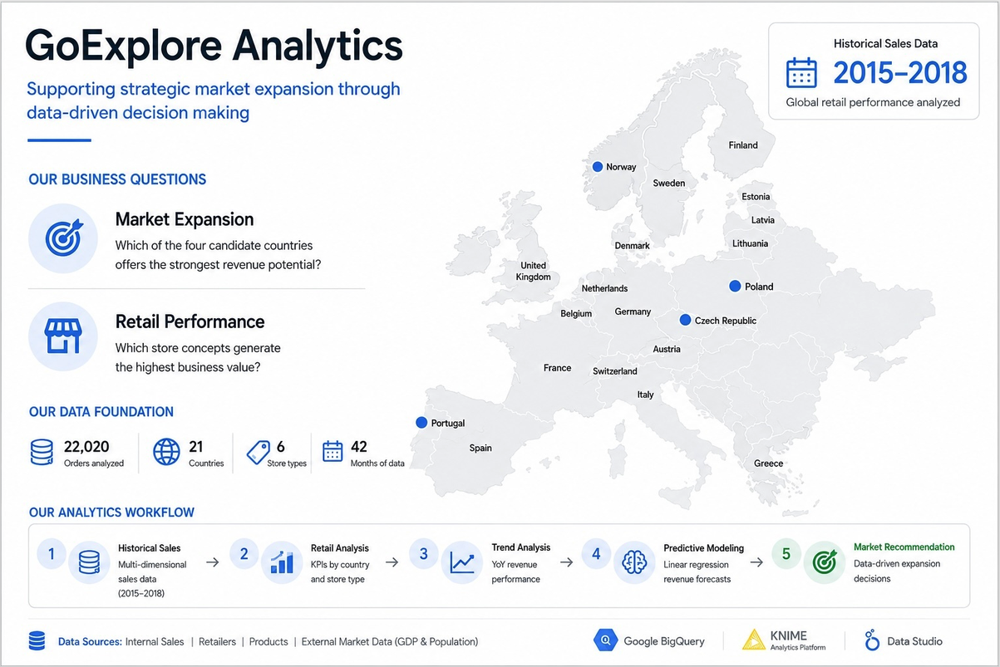
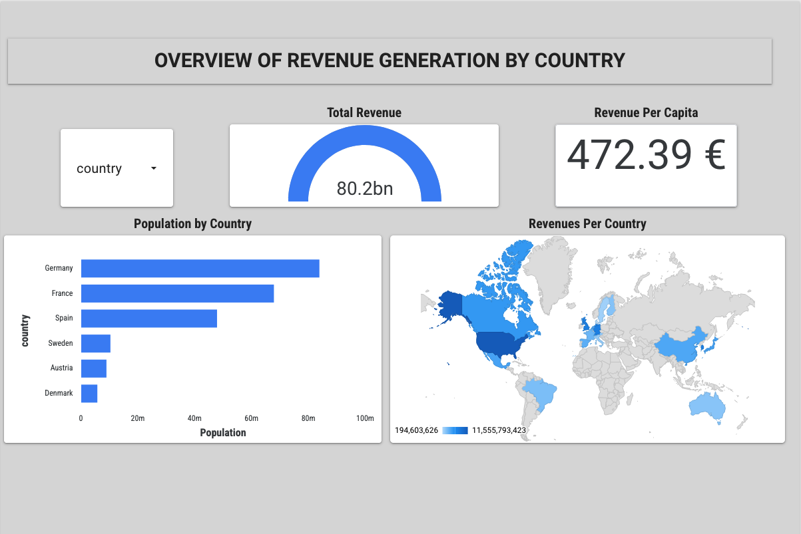
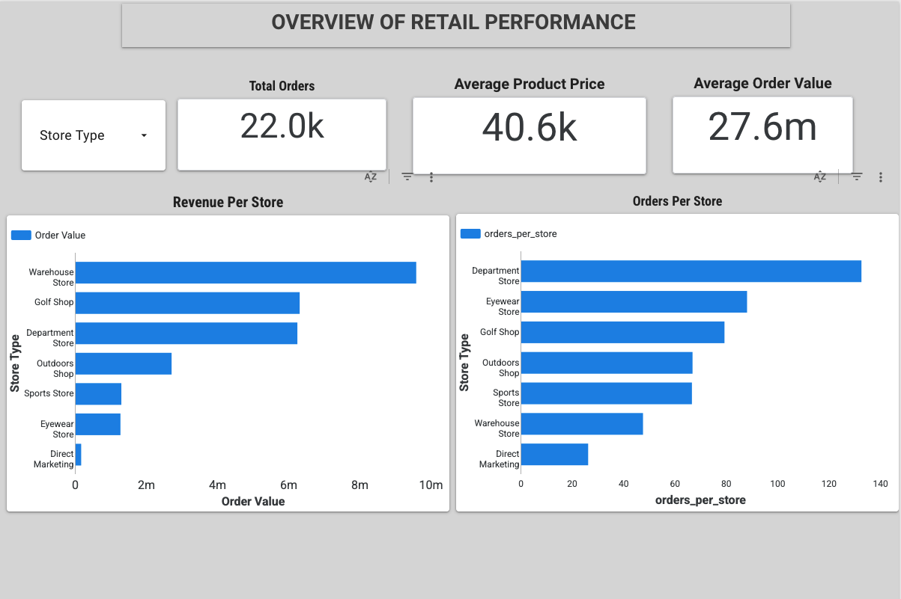
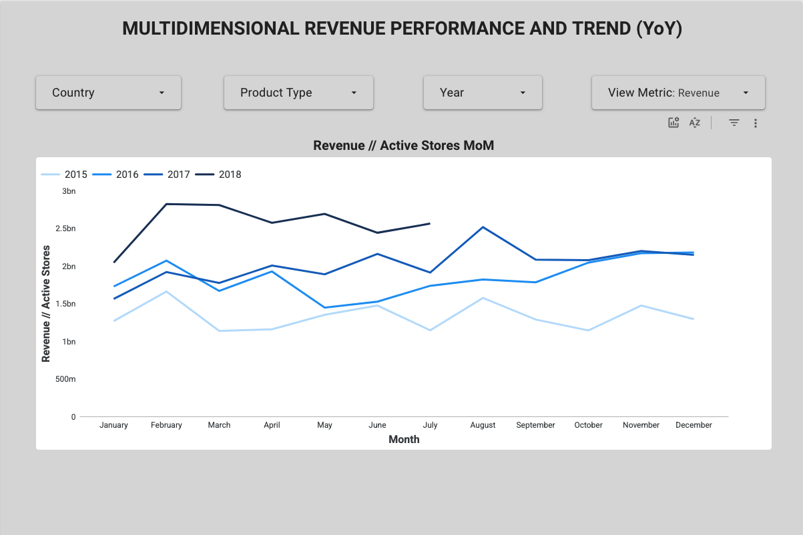
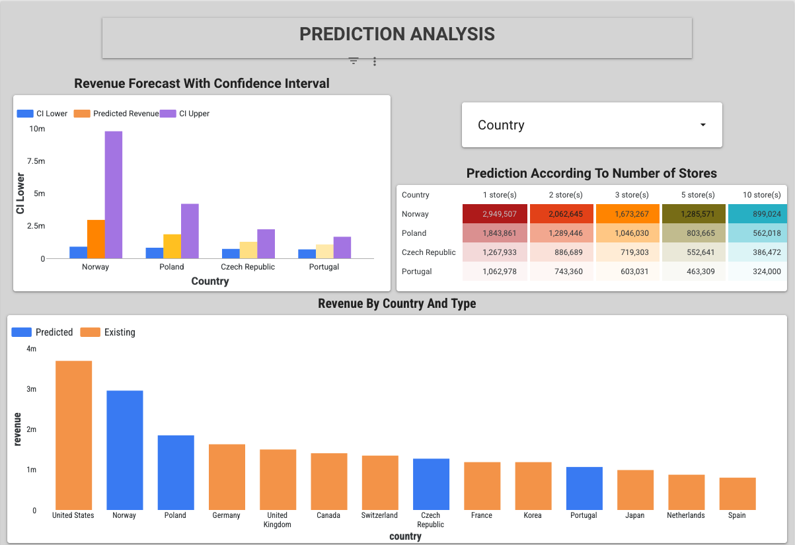
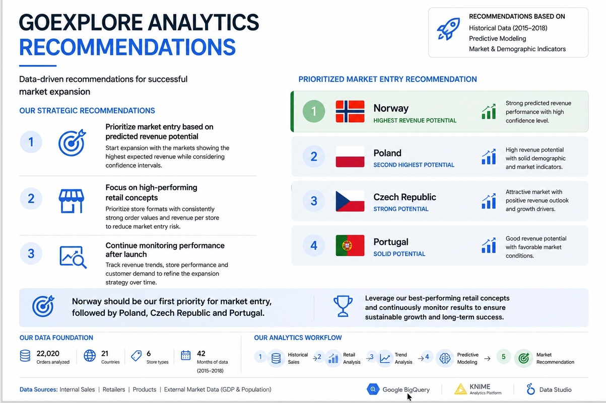

A team analytics project for GoExplore, a European camping & hiking retailer — and the story of how answering it properly meant going past the brief we were actually given.
GoExplore handed us a single spreadsheet — 22,020 orders across 21 countries and 6 store types, spanning January 2015 to July 2018 — and two business questions to answer for the CEO:
The full 10-day roadmap and all five official KPI definitions are documented in Andreas's team blueprint.
Working entirely inside Google's ecosystem, the team turned a messy spreadsheet into a live, filterable dashboard — the artefact Sabah actually clicked through in the final presentation.
The dashboard shipped five pages: revenue by country, retail performance by store type, a YoY multidimensional revenue trend (2015–2018), a prediction-analysis view, and a final prioritized market-entry recommendation.

Dashboard 1 shows a short overview of the business questions we set out to answer: market expansion and retail performance.
Dashboard 2 shows revenue generated by country.
Dashboard 3 shows retail performance by store type.
Dashboard 4 shows the multidimensional YoY revenue trends between 2015 and 2018.
Dashboard 5 shows the prediction analysis with forecasted revenue and confidence intervals.
Dashboard 6 shows the final prioritized market-entry strategy recommendation.Data Studio is a genuinely strong tool for what it's built for: turning already-computed metrics into something a non-technical stakeholder can filter and explore in real time. What it does not do natively is run a regression or generate a forecast — there is no modeling layer behind the charts, only aggregation.
That single gap opened into four separate technical threads, each documented as its own deep dive:
Rebuilt the entire Sheets → BigQuery → Data Studio chain with self-hosted, open-source tools — Postgres, Metabase, VS Code — so a European team has a zero-cloud-dependency option on the table.
0 → 3 KPI dashboards, fully local Read the build →Wired a visual, node-based analytics tool into the shared cloud warehouse — service account, IAM roles, JDBC driver — so modeling nodes could reach live GoExplore data with no code.
Service Account → JDBC → Live query Read the setup →A regression pipeline on live BigQuery data, iterating from a naive linear baseline to a Random Forest model that explains two-thirds of the variance in units sold.
R² 0.197 → 0.685 (3.5×) Read the model →The number behind the dashboard's expansion recommendation: five model iterations from a broken KNIME baseline to a HAC-corrected log-log OLS with interpretable elasticities, cross-checked against a decision tree.
v0 → v4, Cond. No. 922 → 32.6 Read the analysis →Combining the dashboard's retail-performance findings with the modeled revenue potential, the team's final recommendation ranked the four candidate markets as follows:
| Rank | Country | Read |
|---|---|---|
| 1Norway | Highest revenue potential | Strong predicted performance with high confidence — GDP per capita drives the result despite a small population. |
| 2Poland | Second-highest potential | High revenue potential backed by solid demographic and market indicators. |
| 3Czech Republic | Strong potential | Attractive market with a positive revenue outlook and clear growth drivers. |
| 4Portugal | Solid potential | Good revenue potential under favorable market conditions. |
Exact figures were refined across several model iterations — see the econometric deep dive for the full log-log elasticities and per-store sensitivity analysis behind this ranking.
This was a four-person project — everyone worked together on the practical BigQuery pipeline, with each person also owning a piece of the delivery. The deep dives above are my individual extension on top of that shared foundation.